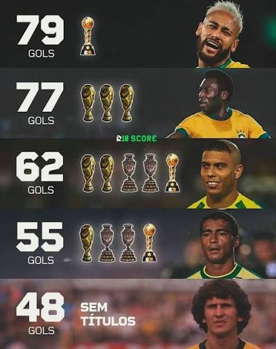

𝑨 𝑯𝒊𝒔𝒕𝒐́𝒓𝒊𝒂 𝑫𝒆 𝑪𝒂𝒅𝒂 𝑪𝒐𝒑𝒂 𝑪𝒐𝒏𝒒𝒖𝒊𝒔𝒕𝒂𝒅𝒂
.jpeg)
𝟷𝟿𝟻𝟾: 𝙾 𝚙𝚛𝚒𝚖𝚎𝚒𝚛𝚘 𝚝𝚒́𝚝𝚞𝚕𝚘, 𝚖𝚊𝚛𝚌𝚊𝚍𝚘 𝚙𝚎𝚕𝚊 𝚎𝚡𝚙𝚕𝚘𝚜𝚊̃𝚘 𝚍𝚘 𝚓𝚘𝚟𝚎𝚖 𝙿𝚎𝚕𝚎́, 𝚊 𝚐𝚎𝚗𝚒𝚊𝚕𝚒𝚍𝚊𝚍𝚎 𝚍𝚎 𝙶𝚊𝚛𝚛𝚒𝚗𝚌𝚑𝚊 𝚎 𝚊 𝚌𝚕𝚊𝚜𝚜𝚎 𝚍𝚎 𝙳𝚒𝚍𝚒.
𝟷𝟿𝟼𝟸: 𝙾 𝚋𝚒𝚌𝚊𝚖𝚙𝚎𝚘𝚗𝚊𝚝𝚘 𝚕𝚒𝚍𝚎𝚛𝚊𝚍𝚘 𝚙𝚘𝚛 𝙶𝚊𝚛𝚛𝚒𝚗𝚌𝚑𝚊, 𝚚𝚞𝚎 𝚊𝚜𝚜𝚞𝚖𝚒𝚞 𝚊 𝚛𝚎𝚜𝚙𝚘𝚗𝚜𝚊𝚋𝚒𝚕𝚒𝚍𝚊𝚍𝚎 𝚊𝚙𝚘́𝚜 𝚊 𝚕𝚎𝚜𝚊̃𝚘 𝚍𝚎 𝙿𝚎𝚕𝚎́, 𝚓𝚞𝚗𝚝𝚘 𝚌𝚘𝚖 𝙰𝚖𝚊𝚛𝚒𝚕𝚍𝚘.
𝟷𝟿𝟽𝟶: 𝙾 𝚝𝚛𝚒𝚌𝚊𝚖𝚙𝚎𝚘𝚗𝚊𝚝𝚘 𝚌𝚘𝚖 𝚘 𝚖𝚊𝚒𝚘𝚛 𝚝𝚒𝚖𝚎 𝚍𝚊 𝚑𝚒𝚜𝚝𝚘́𝚛𝚒𝚊, 𝚋𝚛𝚒𝚕𝚑𝚊𝚗𝚍𝚘 𝚌𝚘𝚖 𝙿𝚎𝚕𝚎́, 𝙹𝚊𝚒𝚛𝚣𝚒𝚗𝚑𝚘 (𝚘 𝙵𝚞𝚛𝚊𝚌𝚊̃𝚘 𝚍𝚊 𝙲𝚘𝚙𝚊), 𝚃𝚘𝚜𝚝𝚊̃𝚘 𝚎 𝚁𝚒𝚟𝚎𝚕𝚕𝚒𝚗𝚘.
𝟷𝟿𝟿𝟺: 𝙾 𝚝𝚎𝚝𝚛𝚊 𝚗𝚘𝚜 𝙴𝚄𝙰, 𝚍𝚎𝚌𝚒𝚍𝚒𝚍𝚘 𝚙𝚎𝚕𝚘 𝚝𝚊𝚕𝚎𝚗𝚝𝚘 𝚍𝚎 𝚁𝚘𝚖𝚊́𝚛𝚒𝚘 𝚗𝚘 𝚊𝚝𝚊𝚚𝚞𝚎 𝚎 𝚙𝚎𝚕𝚊 𝚕𝚒𝚍𝚎𝚛𝚊𝚗𝚌̧𝚊 𝚍𝚎 𝙱𝚎𝚋𝚎𝚝𝚘 𝚎 𝚃𝚊𝚏𝚏𝚊𝚛𝚎𝚕
𝑶𝒔 𝑨𝒓𝒕𝒊𝒍𝒉𝒆𝒊𝒓𝒐𝒔 𝒅𝒐 𝑩𝒓𝒂𝒔𝒊𝒍

𝑵𝒆𝒚𝒎𝒂𝒓 (79 𝒈𝒐𝒍𝒔): 𝑶 𝒉𝒆𝒓𝒅𝒆𝒊𝒓𝒐 𝒅𝒂 𝒄𝒂𝒎𝒊𝒔𝒂 10 𝒒𝒖𝒆 𝒔𝒖𝒑𝒆𝒓𝒐𝒖 𝒓𝒆𝒄𝒐𝒓𝒅𝒆𝒔 𝒉𝒊𝒔𝒕𝒐́𝒓𝒊𝒄𝒐𝒔 𝒆 𝒂𝒔𝒔𝒐𝒎𝒃𝒓𝒐𝒖 𝒐 𝒎𝒖𝒏𝒅𝒐 𝒄𝒐𝒎 𝒂 𝒑𝒊𝒏𝒕𝒖𝒓𝒂 𝒏𝒂 𝒑𝒓𝒐𝒓𝒓𝒐𝒈𝒂𝒄̧𝒂̃𝒐 𝒄𝒐𝒏𝒕𝒓𝒂 𝒂 𝑪𝒓𝒐𝒂́𝒄𝒊𝒂 𝒆𝒎 2022.
𝑷𝒆𝒍𝒆́ (77 𝒈𝒐𝒍𝒔): 𝑶 𝑹𝒆𝒊 𝒅𝒐 𝑭𝒖𝒕𝒆𝒃𝒐𝒍 𝒒𝒖𝒆 𝒊𝒎𝒐𝒓𝒕𝒂𝒍𝒊𝒛𝒐𝒖 𝒐 𝒎𝒂𝒏𝒕𝒐 𝒔𝒂𝒈𝒓𝒂𝒅𝒐 𝒄𝒐𝒎 𝒐 𝒂𝒏𝒕𝒐𝒍𝒐́𝒈𝒊𝒄𝒐 𝒄𝒉𝒂𝒑𝒆́𝒖 𝒏𝒂 𝒇𝒊𝒏𝒂𝒍 𝒅𝒆 1958 𝒆 𝒐 𝒗𝒐𝒐 𝒎𝒂𝒋𝒆𝒔𝒕𝒐𝒔𝒐 𝒏𝒂 𝒇𝒊𝒏𝒂𝒍 𝒅𝒆 1970
𝑹𝒐𝒏𝒂𝒍𝒅𝒐 𝑭𝒆𝒏𝒐𝒎𝒆𝒏𝒐 (62 𝒈𝒐𝒍𝒔) 𝒒𝒖𝒆 𝒅𝒆𝒔𝒂𝒇𝒊𝒐𝒖 𝒂 𝒈𝒓𝒂𝒗𝒊𝒅𝒂𝒅𝒆 𝒆 𝒂 𝒎𝒆𝒅𝒊𝒄𝒊𝒏𝒂, 𝒓𝒆𝒔𝒔𝒖𝒓𝒈𝒊𝒏𝒅𝒐 𝒅𝒂𝒔 𝒄𝒊𝒏𝒛𝒂𝒔 𝒑𝒂𝒓𝒂 𝒅𝒆𝒔𝒕𝒓𝒖𝒊𝒓 𝒂 𝑨𝒍𝒆𝒎𝒂𝒏𝒉𝒂 𝒆 𝒔𝒆𝒍𝒂𝒓 𝒐 𝑷𝒆𝒏𝒕𝒂𝒄𝒂𝒎𝒑𝒆𝒐𝒏𝒂𝒕𝒐 𝒆𝒎 2002.
𝙍𝙤𝙢𝙖́𝙧𝙞𝙤 (55 𝙜𝙤𝙡𝙨): 𝙊 𝘽𝙖𝙞𝙭𝙞𝙣𝙝𝙤 𝙞𝙢𝙥𝙡𝙖𝙘𝙖́𝙫𝙚𝙡 𝙦𝙪𝙚 𝙘𝙝𝙖𝙢𝙤𝙪 𝙖 𝙧𝙚𝙨𝙥𝙤𝙣𝙨𝙖𝙗𝙞𝙡𝙞𝙙𝙖𝙙𝙚 𝙚𝙢 1993 𝙚, 𝙣𝙤 𝙖𝙣𝙤 𝙨𝙚𝙜𝙪𝙞𝙣𝙩𝙚, 𝙛𝙡𝙪𝙩𝙪𝙤𝙪 𝙚𝙣𝙩𝙧𝙚 𝙜𝙞𝙜𝙖𝙣𝙩𝙚𝙨 𝙥𝙖𝙧𝙖 𝙘𝙤𝙡𝙤𝙘𝙖𝙧 𝙤 𝘽𝙧𝙖𝙨𝙞𝙡 𝙣𝙖 𝙛𝙞𝙣𝙖𝙡 𝙙𝙤 𝙏𝙚𝙩𝙧𝙖.
𝒁𝒊𝒄𝒐 (48 𝒈𝒐𝒍𝒔): 𝑶 𝑮𝒂𝒍𝒊𝒏𝒉𝒐 𝒅𝒆 𝑸𝒖𝒊𝒏𝒕𝒊𝒏𝒐, 𝒎𝒆𝒔𝒕𝒓𝒆 𝒂𝒃𝒔𝒐𝒍𝒖𝒕𝒐 𝒅𝒂𝒔 𝒄𝒐𝒃𝒓𝒂𝒏𝒄̧𝒂𝒔 𝒅𝒆 𝒇𝒂𝒍𝒕𝒂 𝒒𝒖𝒆 𝒕𝒓𝒂𝒏𝒔𝒇𝒐𝒓𝒎𝒂𝒗𝒂 𝒄𝒉𝒖𝒕𝒆𝒔 𝒏𝒂 𝒈𝒂𝒗𝒆𝒕𝒂 𝒆 𝒗𝒐𝒍𝒆𝒊𝒐𝒔 𝒑𝒍𝒂́𝒔𝒕𝒊𝒄𝒐𝒔 𝒆𝒎 𝒑𝒖𝒓𝒂 𝒂𝒓𝒕𝒆 𝒏𝒂 𝑪𝒐𝒑𝒂 𝒅𝒆 1982